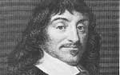

Fizikçi, matematikçi ve filozof olan Rene Descartes (1596-1650), modern felsefenin kurucuları arasında yer almaktadır. Batı düşünce tarihinde bir döneme damgasını vurmuştur. Descartes kendinden önce gelen fiozofların hepsinin ilerisine geçerek Antik Yunan düşünce geleneğine eleştiriler getirmiş ve daha sonra modern felsefeyi oluşturacak olan fikirlerin temelini atmıştır.

Fransa’daki La Haye şehrinde doğan Descartes, önde gelen bir yargıcın oğluydu. Annesi, Descartes henüz bir yaşındayken ölmüştü. Büyükannesi ve büyük amcası tarafından yetiştirildi. Poitiers Üniversitesi’nde hukuk dalında eğitim gördü. Yirmi iki yaşında orduya katıldı. Hollanda’nın Breda şehrine yerleşti, ancak İspanya ile yaşanan savaştan kaçmak için bir yıl sonra buradan ayrıldı.
Almanya, Hollanda ve İtalya’da bir süre seyahat ettikten sonra Paris’e yerleşti. Verimli bir yazar olarak optik, meteoroloji ve matematikle ilgili yazılar kaleme aldı. 1639 yılında Hollanda’nın Leiden şehrine taşındı ve orada en bilinen kitaplarından biri olan Meditations on First Philosophy’i (İlk Felsefe Üzerine Tefekkür) yazdı.
Descartes, Batı düşüncesinin 2 bin yıl boyunca temelini oluşturmuş olan Aristo prensiplerinin hakimiyetini yıkmayı amaçlıyordu. Aristo doğadaki herşeyin, onu biçimlendiren bir amaca -telos- sahip olduğuna inanıyordu. Buna karşılık Descartes, bir bilim adamının sadece gözlemleyebildiği şeyler üzerinde çalışması gerektiğini savunuyordu. Böylece rasyonalizm olarak adlandırılan düşünce okulunun temelleri atılmış oldu.
Descartes, 17. yy Avrupası’nın aydınlanmacı düşünürleri ile iletişim içersindeydi. İsveç Kraliçesi Christina (1629-1689) bir okul açmak için Descartes’i Stockholm’e davet etti. Descartes orada hastalanacak ve elli üç yaşında ölecekti.
Ek Bilgiler
1- Descartes’ın en önemli sözlerinden olan “Cogito ergo sum” (Düşünüyorum, öyleyse varım.) 1644 yılında bir kitapta yayınlanmıştır. Bu ünlü cümle, kendimiz dahil herhangi bir şeyin gerçekten var olup olmadığını bilip bilemeyeceğimizle ilgili felsefi tartışmaya yanıt olarak kaleme alınmıştır.
2- Descartes’in beyninden geriye kalanlar Paris’teki “Musee de l’Homme”da sergilenmektedir.
3- Filozofun doğum yeri La Haye, 1967’de Descartes ismini almıştır.